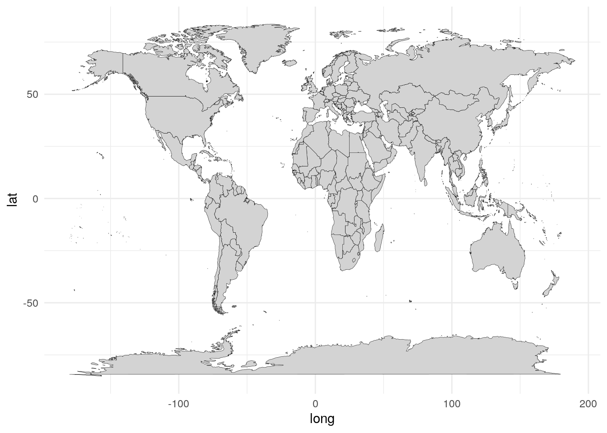
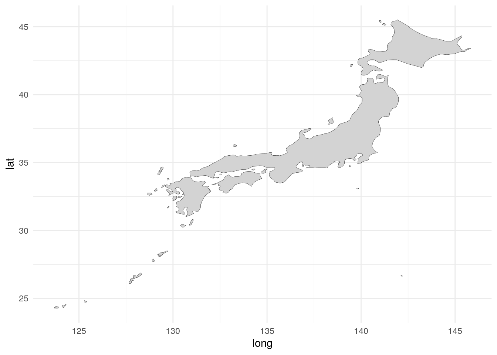
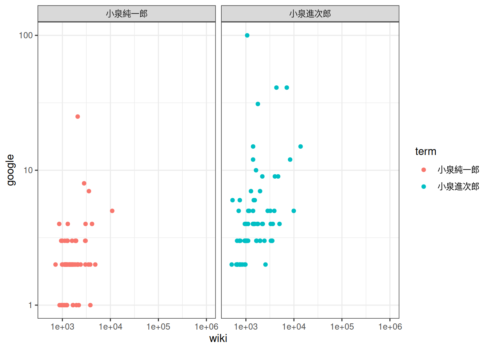
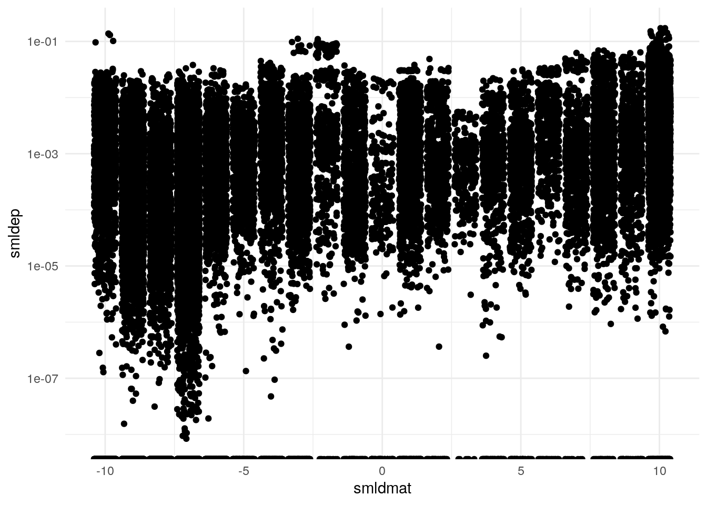
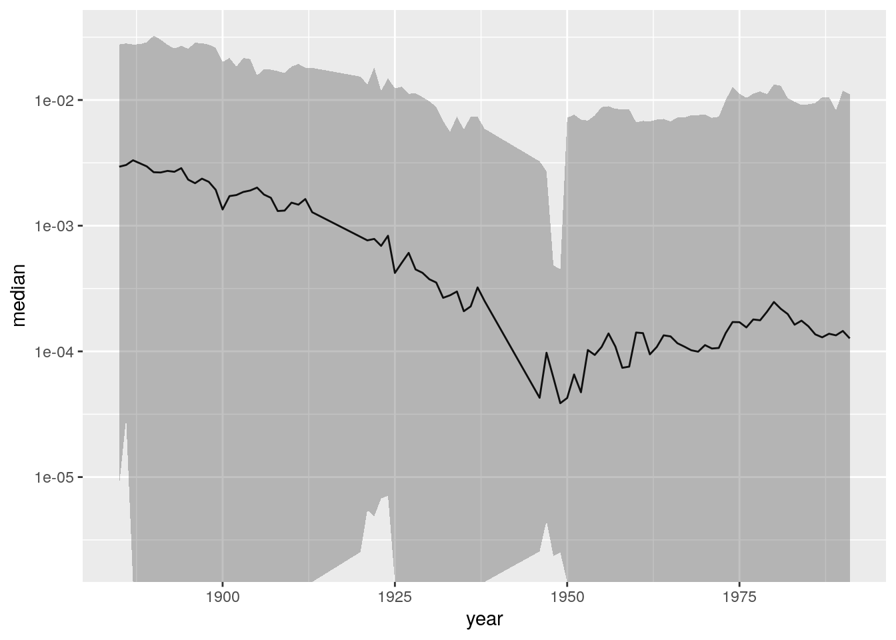

第12章 時系列のグラフ
x軸が年のような時間軸の場合、
- 折れ線グラフ
による可視化が適当でしょう。
パネルデータのように、複数の時系列データが含まれている場合は、
- エラーバー
- 箱ひげ図
などにより、散らばりも同時に可視化することもできます。
## ── Attaching packages ────────────────────────────────────────────────────────────────────────────────────────────────────────────────── tidyverse 1.3.0 ──## ✓ ggplot2 3.3.0 ✓ purrr 0.3.4
## ✓ tibble 3.0.1 ✓ dplyr 0.8.5
## ✓ tidyr 1.0.2 ✓ stringr 1.4.0
## ✓ readr 1.3.1 ✓ forcats 0.5.0## ── Conflicts ───────────────────────────────────────────────────────────────────────────────────────────────────────────────────── tidyverse_conflicts() ──
## x dplyr::filter() masks stats::filter()
## x dplyr::lag() masks stats::lag()## Parsed with column specification:
## cols(
## statea = col_double(),
## stateb = col_double(),
## year = col_double(),
## dependa = col_double(),
## dependb = col_double(),
## demauta = col_double(),
## demautb = col_double(),
## allies = col_double(),
## dispute1 = col_double(),
## logdstab = col_double(),
## lcaprat2 = col_double(),
## smigoabi = col_double(),
## opena = col_double(),
## openb = col_double(),
## minrpwrs = col_double(),
## noncontg = col_double(),
## smldmat = col_double(),
## smldep = col_double(),
## dyadid = col_double()
## )12.1 折れ線グラフ
まず、二国間の相互依存度smldepを年ごとに平均を取ったデータをdfとして作成します。
標準作画関数ではplot()を使い、オプションでtype = "l"とします。

ggplot2ではgeom_line()を使います。

複数の時系列データの場合、groupを指定することで、例えば二国間ごとにプロットすることができます。
tri %>%
ggplot() +
geom_line(aes(x = year, y = smldep, group = as.factor(dyadid)), alpha = 0.3) +
scale_y_log10()## Warning: Transformation introduced infinite values in continuous y-axis
12.2 エラーバー
しかし、分析単位の数が多すぎると複数の折れ線グラフは見にくいかもしれません。 そのようなときは、箱ひげ図やバイオリンプロットを使うのも一案です。
すでに、それらの作図方法は解説しているので、ここでは別のアプローチを考えます。 変数の5%, 50%, 95%四分位点をプロットしたいとします。
まず、各年の各四分位点を求めて。dfというデータフレームを作成します。
df <- tri %>%
group_by(year) %>%
summarise(median = quantile(smldep, 0.5, na.rm = TRUE),
low = quantile(smldep, 0.05, na.rm = TRUE),
high = quantile(smldep, 0.95, na.rm = TRUE))
df一つのやり方は、geom_pointrange()を使う方法です。
df %>%
ggplot() +
geom_pointrange(aes(x = year, y = median, ymin = low, ymax = high)) +
scale_y_log10()## Warning: Transformation introduced infinite values in continuous y-axis
geom_line()とgeom_ribbon()を使うという手もあります。
df %>%
ggplot() +
geom_line(aes(x = year, y = median)) +
geom_ribbon(aes(x = year, ymin = low, ymax = high), alpha = 0.3) +
scale_y_log10()## Warning: Transformation introduced infinite values in continuous y-axis